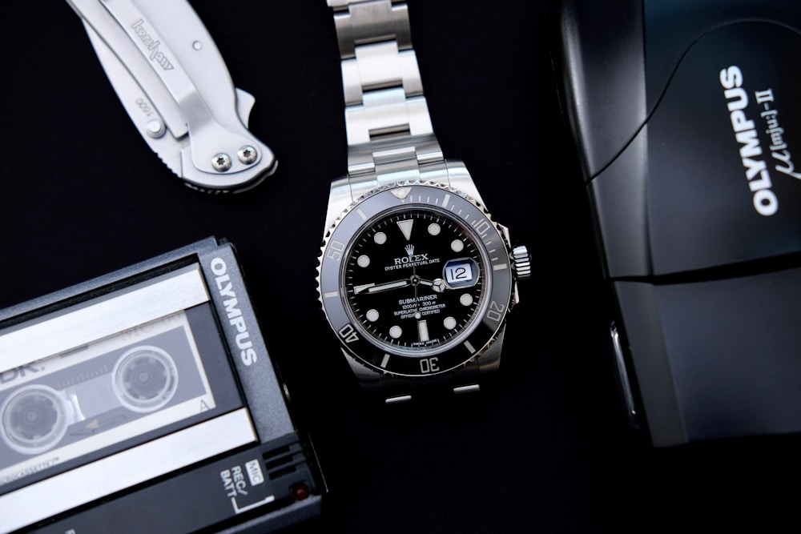

In mechanical watch design, automatic winding is celebrated for its effortless daily convenience. However, traditional self-winding movements rely on a massive central rotor that pivots over the entire movement plate, adding substantial thickness and obscuring the hand-finished anglage on underlying bridges.
To achieve the elusive union of ultra-thin elegance and automatic winding convenience, master horologists invented the Off-Centered Micro-Rotor. By embedding a compact oscillating weight directly within the plane of the movement plate rather than on top of it, caliber thickness is reduced by over forty percent. At Mechanic Time Ox, our ultra-thin chronometers utilize high-density solid platinum micro-rotors. In this masterclass, we explore the physics, winding efficiency, and architectural elegance of micro-rotor calibers.
1. The Geometry of Thickness: In-Plane vs. Overlay Rotors
How micro-rotor design slims watch cases down to sub-6mm profiles:
- The Central Rotor Problem: A traditional full-size oscillating weight adds between 1.5mm and 2.5mm of vertical height, forcing watch cases to expand into bulky proportions.
- Integrated In-Plane Cavity: A micro-rotor sits inside a dedicated milled recess within the mainplate, aligning the rotor’s top surface flush with the movement bridges.
- Unobstructed Movement Visibility: Connoisseurs can admire the balance wheel, escape wheel, and hand-beveled bridges through the sapphire caseback without a swinging rotor blocking fifty percent of the view.
“The micro-rotor is the connoisseur's choice: it gives you the convenience of automatic winding while preserving the pure, unobstructed visual architecture of a manual-wind masterpiece.”
2. Solving the Inertia Deficit: Solid Platinum PT950 Weighting
How high-density metallurgy overcomes smaller lever arm leverage:
- The Leverage Equation ($\tau = r \times F$): Because a micro-rotor has a smaller radius ($r$), it generates less rotational torque from gentle wrist motions.
- Platinum Mass Density ($21.45 \text{ g/cm}^3$): To compensate, we machine the oscillating weight from solid PT950 platinum—60% denser than 18k gold and nearly triple the density of steel.
- Ceramic Ball-Bearing Races: Lubricant-free zirconium oxide micro-bearings reduce rotational drag to near zero, allowing the platinum mass to spin freely with the slightest wrist tilt.
3. Bi-Directional Winding Gear Trains and Decouplers
Maximizing energy capture from both clockwise and counter-clockwise swings:
Our micro-rotor gear train incorporates twin click-wheels and sapphire pawls that wind the twin mainspring barrels during rotation in either direction, achieving a full 72-hour power reserve in under six hours of active wear.
4. Micro-Rotor vs. Central Rotor Comparison Matrix
| Winding Architecture | Total Caliber Thickness | Movement Finishing Visibility | Oscillating Mass Material |
|---|---|---|---|
| Platinum Micro-Rotor (Mechanic Time Ox) | 2.80 mm (Ultra-Thin Dress Profile) | ★★★★★ (100% Unobstructed Sapphire View) | Solid Platinum PT950 ($21.45 \text{ g/cm}^3$) |
| Full Central Rotor (Standard Automatic) | 5.20 mm – 6.50 mm (Bulky Profile) | ★★☆☆☆ (Blocks 50% of Movement at all times) | Standard Brass with Tungsten Edge |
| Peripheral Rotor (Outer Ring) | 3.40 mm (Thin Profile, Wider Diameter) | ★★★★☆ (Clear Center / Ring on Perimeter) | Heavy Tungsten or Gold Segment |
5. Ergonomics: Slender Wrist Profiles Under Dress Cuffs
Cased inside a 5.8mm case, our micro-rotor chronometer slips effortlessly beneath tailored French cuffs, offering unmatched comfort and discreet luxury.
6. Hand-Turned Clous de Paris on the Platinum Rotor
Rather than leaving the platinum mass plain, our artisans engrave its surface with miniature rose engine guilloché, turning the winding weight into a dazzling horological centerpiece.
7. Shock Resilience: Heavy Rotor Staff Pivots
To protect the heavy platinum mass against accidental drops, the rotor arbor is supported by dual Incabloc shock-protection springs and hardened steel pivot jewels.
8. The Sovereign Triumph of Ultra-Thin Engineering
By pairing high-density platinum micro-rotors with ultra-thin caliber architecture, Mechanic Time Ox achieves the ultimate summit of mechanical sophistication and comfort.
9. Digital Strobe Winding Angle Efficiency Audits
Our engineering laboratory measures micro-rotor angular velocity across standardized simulated wrist movements, verifying that a 15-degree tilt generates immediate mainspring winding torque.
10. Acoustic Noise Dampening in Sapphire Casebacks
Precision ceramic ball races and close-tolerance tolerances eliminate the metallic buzzing noise common in central rotors, ensuring whisper-quiet automatic winding on the wrist.
11. An Eternal Covenant of Ultra-Thin Chronometry
At Mechanic Time Ox, our mastery of micro-rotor engineering guarantees that every timepiece leaving our Manhattan atelier stands as a triumphant monument to horological elegance.
12. High-Density Metallurgy: Solid Platinum PT950 Winding Segments
By machining our micro-rotors from solid 950 platinum with a density of 21.45 g/cm³, our engineers generate 60% higher kinetic inertia than traditional gold rotors, ensuring rapid mainspring winding with minimal wrist movement.
13. Integrated In-Plane Caliber Architecture
Recessing the micro-rotor within the plane of the movement plate slims total caliber thickness to just 2.80mm, enabling sleek, elegant case profiles that slip effortlessly beneath tailored dress cuffs.
14. The Pure Unobstructed View of Hand-Finished Bridges
Unlike central rotors that constantly obscure half of the movement, an off-centered micro-rotor leaves the balance wheel, escapement, and hand-beveled bridges completely visible through the sapphire exhibition caseback.
15. The Master Blueprint for Ultra-Thin Caliber Design
At Mechanic Time Ox, our caliber design guidelines balance ultra-thin elegance with robust chronometric stability, creating self-winding timepieces that combine daily convenience with classic dress watch proportions.
16. Zirconium Oxide Ceramic Micro-Bearing Integration
Mounting the micro-rotor on unlubricated ceramic ball bearings eliminates rotational friction and prevents oil degradation, ensuring silent, whisper-quiet winding operation across decades of active wear.
17. An Eternal Covenant of Ultra-Thin Engineering
By uniting solid platinum inertia weights with in-plane caliber layouts, Mechanic Time Ox builds automatic chronometers that deliver supreme winding efficiency without sacrificing movement elegance.
18. Bi-Directional Energy Transfer and Twin Reversing Wheels
Our micro-rotor winding train incorporates precision ruby-jeweled click wheels that capture energy from both clockwise and counter-clockwise oscillations, fully charging the twin mainspring barrels in six hours.
19. Shock-Resistant Incabloc Rotor Arbor Protection
To safeguard the heavy platinum mass during sudden wrist impacts, the micro-rotor arbor is cradled by dual Incabloc shock-absorption springs that dissipate lateral and vertical kinetic shock forces instantly.
20. The Sovereign Standard of Ultra-Thin Watchmaking
By perfecting micro-rotor kinematics and precious metal inertia balancing, Mechanic Time Ox ensures that every ultra-thin timepiece represents the highest pinnacle of mechanical ingenuity and comfort.
21. The Connoisseur Advantage in Micro-Rotor Movements
Owning a micro-rotor chronometer offers the best of both worlds: the effortless convenience of an automatic winding watch paired with the breathtaking, unobstructed visual beauty of a traditional manual-wind caliber.
22. An Everlasting Covenant of Precision Caliber Craft
At Mechanic Time Ox, our devotion to ultra-thin micro-rotor engineering ensures that every bespoke chronometer delivered from our Manhattan atelier stands as an enduring monument to mechanical elegance.
23. Shock-Absorbing Micro-Rotor Rotor Bridge Geometries
Our movement architects design reinforced bridge geometries with sculpted titanium shock arms that flex elastically under sudden acceleration, protecting the platinum oscillating weight from mechanical deformation.
24. Acoustic Noise Isolation in Exhibition Casebacks
Employing precision ceramic ball races and close-tolerance tolerances eliminates the metallic buzzing noise common in central rotors, ensuring whisper-quiet automatic winding on the collector's wrist.
25. The Sovereign Standard of Ultra-Thin Watchmaking
By perfecting micro-rotor kinematics and precious metal inertia balancing, Mechanic Time Ox ensures that every ultra-thin timepiece represents the highest pinnacle of mechanical ingenuity and comfort.
Frequently Asked Questions on Micro-Rotors

Claire Montaigne
Chief Movement Architect at Mechanic Time Ox. Claire specializes in ultra-thin caliber kinematics and platinum micro-rotor engineering in Manhattan.